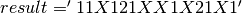
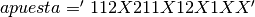

Ejercicios resueltos¶
Ejercicio 1 (Función size())¶
Escribir una función que devuelva logical 1 si la variable que recibe como argumento es un vector fila o columna, y logical 0 en otro caso ( argumento escalar o argumento matriz).
function is = isVector(v)
% Devuelve logical 1 si la variable recibida
% es un vector y logical 0 en otro caso.
% Comprobación del número de argumentos
if (nargin ~= 1)
is = logical(0);
return;
end
if (xor(size(v,1)==1, size(v,2)==1))
% Es un vector
is = logical(1);
else
% No es un vector
is = logical(0);
return;
end
end
Ejercicio 2 (Bucles for)¶
Escribir una función que calcule la suma s de los elementos de un vector que recibe como argumento. La función comprobará que el argumento recibido es un escalar o un vector. En caso de recibir un argumento no válido, la función devolverá NaN.
Note
Octave tiene una función de librería que realiza los cálculos pedidos en el enunciado, se trata de la función sum(). En la solución del ejercicio no se podrán utilizar funciones de librería, el propósito del ejercicio es que el alumno utilice bucles y operadores aritméticos corrientes.
function s = sumvector(v)
% Suma las compnentes de un vector
if(nargin ~= 1)
s = NaN;
return;
end
if( (size(v,1) ~= 1) & (size(v,2) ~= 1) )
s = NaN;
return;
end
s = 0;
for index = 1: length(v)
s = s + v(index);
end
end
Ejercicio 3 (Bucles for. Algoritmo de la suma)¶
Escribir una función que devuelva la suma de todos los elementos de un vector o matriz que recibe como argumento. En el caso de recibir un escalar o un vector la función pedida sería equivalente a la función sum() de la librería. En el caso de recibir una matriz como argumento, el resultado de la función pedida sería equivalente a la expresión sum(sum()). En la solución no se utilizarán funciones de librería, solamente operadores aritmeticos sencillos.
function s = sumall(A)
% Suma todos los elementos de un vector o una matriz
filas = size(A,1);
cols = size(A,2);
s = 0;
for ind1 = 1: filas
for ind2 = 1: cols
s = s + A(ind1,ind2);
end
end
end
Ejercicio 4 (Bucles for. . Algoritmo del producto)¶
Escribir una función que devuelva el producto de todos los elementos de un vector o matriz que recibe como argumento. En el caso de recibir un escalar o un vector la función pedida sería equivalente a la función prod() de la librería. En el caso de recibir una matriz como argumento, el resultado de la función pedida sería equivalente a la expresión prod(prod()). En la solución no se utilizarán funciones de librería, solamente operadores aritmeticos sencillos.
function p = prodall(A)
% Multiplica todos los elementos de un vector o una matriz
filas = size(A,1);
cols = size(A,2);
p = 1;
for ind1 = 1: filas
for ind2 = 1: cols
p = p * A(ind1,ind2);
end
end
end
Ejercicio 5 (Bucles for)¶
Escribir una función que realice el puntoproducto .* de dos vectores que recibe como argumento. La función comprobará que el número de argumentos recibidos es correcto, y que se trata de dos vectores. Si los argumentos no son correctos, la función devolverá NaN. En la solución solo se permitirá la utilización de bucles y operadores aritméticos sencillos. La función devolverá el resultado correcto independientemente de que los vectores recibidos sean fila-fila, col-col, fila-col o col-fila.
function pp = puntoprod(v, w)
% Calcula el punto producto de dos vectores que recibe como argumento
% Comprobación del número de argumentos recibidos
if (nargin ~= 2)
pp = NaN;
return;
end
% Comprobación de la dimensión de los vectores
if (size(v,1) ~= 1 & size(v,2) ~= 1)
pp = NaN;
return;
elseif (size(w,1) ~= 1 & size(w,2) ~= 1)
pp = NaN;
return;
elseif (length(v) ~= length(w))
pp = NaN;
return;
end
pp = 0;
for index = 1:length(v)
pp = pp + v(index) * w(index);
end
Ejercicio 6 (Bucles for)¶
Escribir una función que calcule la matriz C producto de dos matrices A y B que recibe como argumentos. La función comprobará, en primer lugar, que el número de argumentos recibidos es el adecuado y que las dimensiones de las matrices A y B son congruentes. En caso de argumentos incorrectos la función devolvera una matriz vacía []. Si los argumentos son correctos, la función calculará la matriz C sin hacer uso de funciones de librería, utilizando bucles y operadores aritméticos sencillos.
function C = prodmat(A, B)
% prodmat.m : Calcula la matriz C, producto de las matrices A y B
% Comprobación del número de argumentos recibidos
if (nargin ~= 2)
C = [];
return;
end
% Comprobación de la dimensión de las matrices
% El número de columnas de A debe ser igual al de filas de B
% Si las dimensiones no son las correctas el programa finaliza
if (size(A,2) ~= size(B,1))
C = [];
return;
end
% Preparo la matriz solución con las dimensiones adecuadas
% Si son A(m,n) y B(n,p) las dimensiones de C seran C(m,p)
C = zeros(size(A,1),size(B,2));
% Cálculo del producto mediante dos bucles for anidados
for fila = 1: size(A,1)
for col = 1:size(B,2)
sum = 0;
for(index=1:size(A,2))
sum = sum + A(fila, index) * B(index, col);
end
C(fila,col) = sum;
end
end
end
Ejercicio 7 (Strings, Funciones)¶
La variable  contiene los resultados de los catorce partidos de futbol de la quiniela de una jornada. La variable  tiene los resultados apostados en una determinada quiniela. Se pide: (a) Calcule en una sola expresión cuantos resultados hay acertados. (b) Cuales son los numeros de orden de los partidos que se han acertado. (C) Cuáles son los resultados acertados.
numAciertos = sum(result == apuesta)
ans = 8
partidosAcertados = find(result == apuesta)
ans = 1 2 5 6 8 9 12 13
resultadosAcertados = result(result == apuesta)
ans = 1121X11X
Ejercicio 8 (Función rand())¶
Desarrolle una función llamada dado() que devuelva un número aleatorio entre uno y seis, todos ellos con la misma probabilidad de ocurrencia.
function r = dado()
% dado() : devuelve un numero r al azar entre 1 y 6
% Fórmulas útiles para números aleatorios
% Número entre A y A+1 : A + rand();
% Número entre A y B : A + (B-A) * rand()
% Número entero entre A y B : round(A + (B-A) * rand())
n = round(1 + (6-1) * rand());
end
Ejercicio 9 (nargin, función rand())¶
Modifique la función dado() del ejercicio anterior de manera que en caso de recibir un número n como argumento devuelva un vector de n componentes cada una de ellas con el resultado de una tirada de dado. Si no recibe argumentos seguirá devolviendo un único número entre 1 y 6. Si el parámetro n recibido como argumento no es entero, se redondeará al entero más proximo.
function r = dado(n)
% dado() : devuelve un numero r al azar entre 1 y 6
if(nargin == 0)
r = round(1 + (6-1) * rand());
return;
end
if(size(n,1) ~=1 | size(n,2) != 1 | n<=0)
r = round(1 + (6-1) * rand());
return;
end
n = round(n);
r = [];
for ind = 1 : n
r(ind) = round(1 + 5 * rand());
end
end
Ejercicio 10 (Algoritmo de máximo)¶
Desarrolle una función que reciba un vector V de números reales y devuelva un vector de dos componentes [max, n], la primera, max, con el valor máximo de las componentes del vector V de entrada y la segunda, n, con la posición que ocupa el máximo dentro del vector V. El problema se resolverá mediante bucles y el algoritmo de máximo.
function [max, pos] = maxx(V)
max = V(1);
pos = 1;
for k = 1 : length(V)
if V(k) > max
max = V(k);
pos = k;
end
end
end
Note
En el bucle anterior, se comienza en 1 a propósito. Repetimos el conteo del primer elemento, pero la rutina sigue funcionando si se recibe un vector de una sola componente, esto es, un escalar.
Ejercicio 11 (Diagonal secundaria)¶
Desarrolle una función que reciba una matriz como argumento y devuelva un vector fila con los elementos de la diagonal secundaria.
function dg = diag2(A)
% diag2(A) : Devuelve un vector fila con las componentes de la diagonal secundaria
numfilas = size(A,1);
numcolumnas = size(A,2);
% El primer elemento de la diagonal secundaria es A(1,numcolumnas)
% El segundo es A(2, numcolumnas-1)
% El último es A(numfilas, numcolumnas-numfilas) si numcolumnas > numfilas
% El último es A(numfilas, 1) si numcolumnas <= numfilas
dg = [];
k = 0;
while ((numcolumnas - k) > 0 & (k+1) <= numfilas )
dg(k+1) = A(k + 1, numcolumnas - k );
k = k +1;
end
end
Otra solución del problema utilizando un bucle for en lugar de un bucle while:
function dg = diag2(A)
% diag2(A) : Devuelve un vector fila con las componentes de la diagonal secundaria
numfilas = size(A,1);
numcolumnas = size(A,2);
dg = [];
for k = 1 : numfilas
if (numcolumnas - k + 1) == 0
break;
end
dg(k) = A(k, numcolumnas - k +1);
end
end
Otra solución, observando que los elementos de la diagonal secundaria siempre suman 1 + numcolumnas:
function dg = diag23(A)
% diag2(A) : Devuelve un vector fila con las componentes de la diagonal secundaria
numfilas = size(A,1);
numcolumnas = size(A,2);
% Los índices de los elementos de la diagonal secundaria
% siempre suman 1 + numcolumnas
dg = [];
contador = 0;
for fil = 1 : numfilas
for col = 1 : numcolumnas
if (fil + col) == (1 + numcolumnas)
contador = contador + 1;
dg(contador) = A(fil, col);
end
end
end
end
Ejercicio 12 (Recursividad, Factorial de un número)¶
Podemos calcular el factorial de un número mediante la función factorial(), también a partir de la función prod(1:n). Lo que se pide en este problema es desarrollar una función que calcule el factorial de un número natural mediante recursividad, esto es, mediante una función que se llame a si misma.
function fac = recurfac(n)
% Calcula el factorial de un número n mediante recursividad
if(n == 0)
fac = 1;
else
fac = n * recurfac(n-1);
end
end